「アプリを開く → 何問か解く → 間違えたところを潰す → ストリークが 1 日伸びる」を、迷わず自分で回せるようになること。慣れれば 5 分で終わります。
画面写真は同梱のサンプル試験のものです。1 セッションの問題数、本番モードの問題数と制限時間、合格ラインは試験ごとに違います。
1アプリを開く
アプリを用意した人から渡された URL を、スマホか PC のブラウザで開きます。インストールは要りません。
まだ URL を持っていない／とりあえず試してみたいという方は、 サンプル試験のデモサイト を開けば登録不要ですぐ解けます（お試し用なので成績は残りません）。
開いたらログインします。初めてなら先に 02. ユーザーの登録 を済ませてください。
ホーム画面に追加しておく（おすすめ）
毎日使うものなので、ホーム画面に置いておくと起動が一気に楽になります。ブラウザの共有メニューから「ホーム画面に追加」を選ぶだけです。
- iPhone（Safari） — 共有ボタン → 「ホーム画面に追加」
- Android（Chrome） — 右上のメニュー → 「ホーム画面に追加」／「アプリをインストール」
一度開いておけば、問題文も図も音声も端末側に取り込まれます。電車の中でも、機内でも問題を解けます。ただしオフラインで解いた分は成績に記録されません。記録を残したいときは通信できる状態で解いてください。
ホーム画面で見るもの
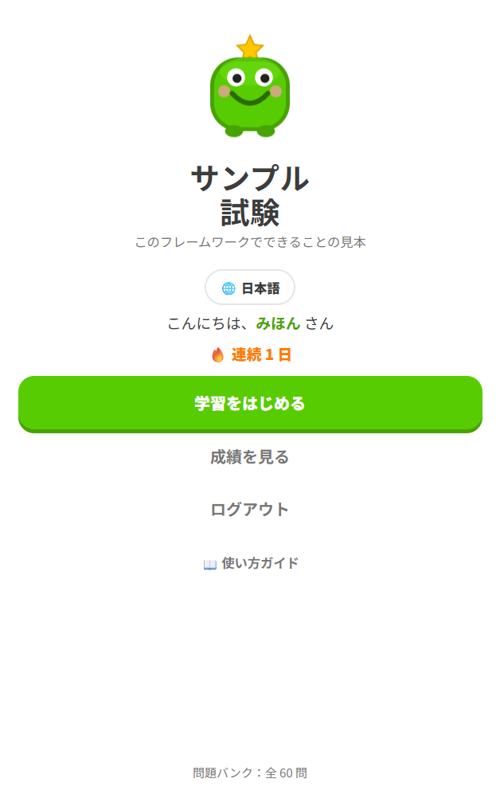
| 表示 | 意味 |
|---|---|
| こんにちは、○○ さん | いまログインしている人。共有端末なら始める前に確認 |
| 🔥 連続 N 日 | 途切れずに続いている日数。淡い色で「（今日もやろう！）」なら今日はまだ未達成 |
| 学習をはじめる | 問題を解く。ここから始める |
| 成績を見る | 通算の成績を確認する |
| 問題バンク：全 N 問 | この試験に入っている問題の総数 |
| 📖 使い方ガイド | このガイドを開く |
| 🌐 ボタン | 原文と訳文の切り替え（訳文がある試験のみ） |
2試験を始める
「学習をはじめる」を押すと、モード選択の画面になります。出題タイプとセッションを 1 つずつ選ぶと「スタート」が押せるようになります。
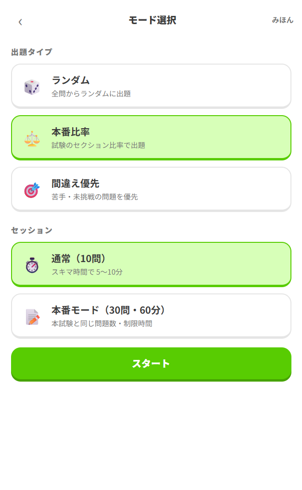
それぞれの中身は 01 章 で説明しています。迷ったときの選び方はこうです。
「スタート」を押すと、いきなり 1 問目が出ます。
3通常セッションを解く
通常セッションは1 問ずつ、その場で採点されます。画面上部のバーが進み具合、右上の「1 / 10」が何問目かです。
選択肢を選んで「回答する」
単一選択なら 1 つ選ぶと「回答する」が押せます。複数選択の問題には水色の帯で「複数選択：当てはまるものをすべて選んでください」と出ます。
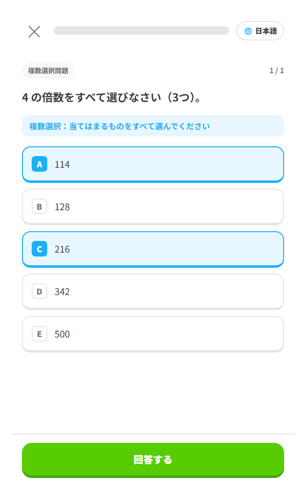
正解が 3 つある問題で 2 つしか選ばなければ誤答です。余計に選んでも誤答です。問題文の「（3つ）」のような指定を必ず読んでください。
その場で正誤と解説を読む
「回答する」を押すと、すぐに答え合わせが始まります。
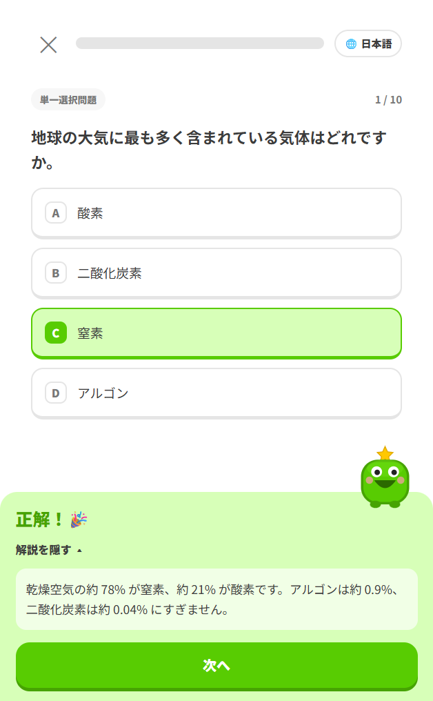
| 見え方 | 意味 |
|---|---|
| 緑の枠 | 正解の選択肢 |
| 赤の枠 | 自分が選んだ誤答 |
| 「選び漏れ」タグ | 正解だったのに選ばなかった選択肢（複数選択のとき） |
| 解説を見る ▾ | 押すと解説が開く。図や音声が付くこともある |
まぐれ当たりを見逃さないためです。「なぜこれが正解か」を自分の言葉で言えないなら、まだ身に付いていません。
読み終えたら「次へ」で進みます。最後の問題の「次へ」で結果画面になります。
4本番モードを解く
本番モードは、本試験と同じ問題数・制限時間で通しで解きます。通常セッションと違うところが 3 つあります。
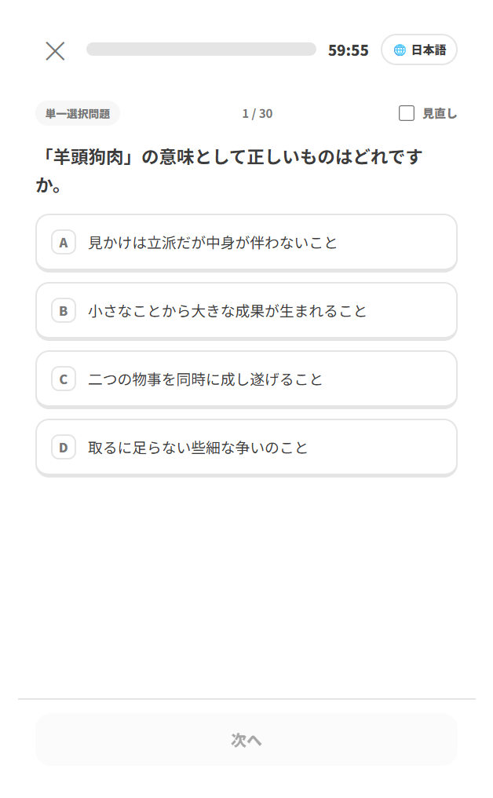
解答一覧で見直す
最後の問題の「次へ」を押すと、全問の解答一覧が出ます。
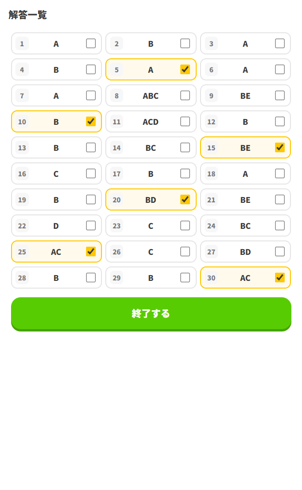
ここでフラグを付けた問題（黄色）を見直し、必要なら番号を押して戻って解き直します。納得したら「終了する」で採点です。
一覧で記号が入っていない番号は、まだ答えていない問題です。本試験でも同じことですが、迷っても必ず何か選んでから終了してください。
5成績の見方
解き終えると結果画面になります。
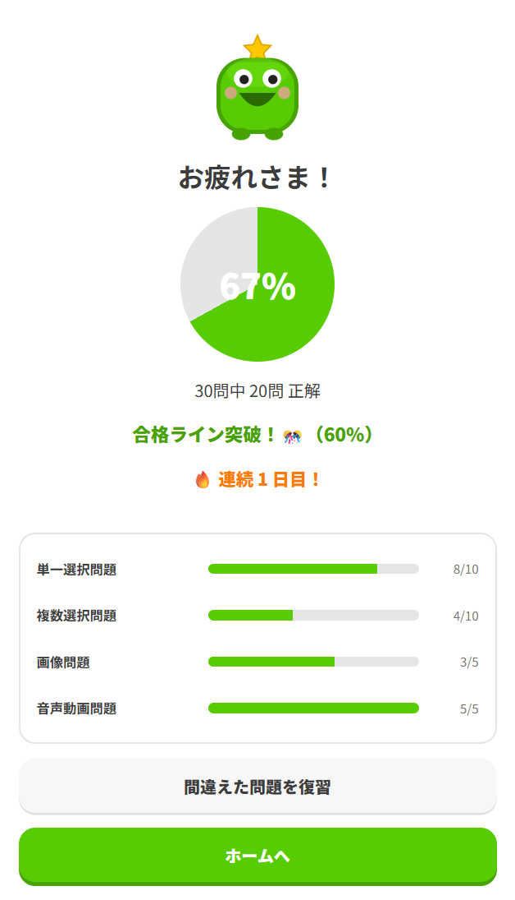
上から順に、こう読みます。
| 表示 | 読み方 |
|---|---|
| 円グラフの中の % | このセッションの正答率 |
| N 問中 M 問 正解 | 内訳。母数が小さいと % は振れるので、この数字も見る |
| 合格ライン突破！🎊（60%） | 合格ラインに届いた。カッコ内がその試験の合格ライン |
| あと X 問で合格ライン（60%） | 届かなかった。あと何問正解すればよかったか |
| 🔥 連続 N 日目！ | 今日のストリークが確定した |
| セクション別の内訳 | ここがいちばん大事。どの分野で落としたかが分かる |
10 問のセッションでは、1 問の当たり外れで 10% 動きます。その日の点数より、セクション別の内訳で同じ分野が続けて低いかどうかを見てください。そこが本当の弱点です。
なお、この結果画面の点数は閉じると残りません。残るのは問題ごとの通算だけで、ホームの「成績を見る」から確認します。詳しくは 02 章の進行度の確認方法 を参照してください。
6セッションの終了と間違え見直し
結果画面に誤答があると、終わり方を選べます。ここで終わらせずに、間違いを潰してから閉じるのがこのアプリの本来の使い方です。
復習ループで潰す
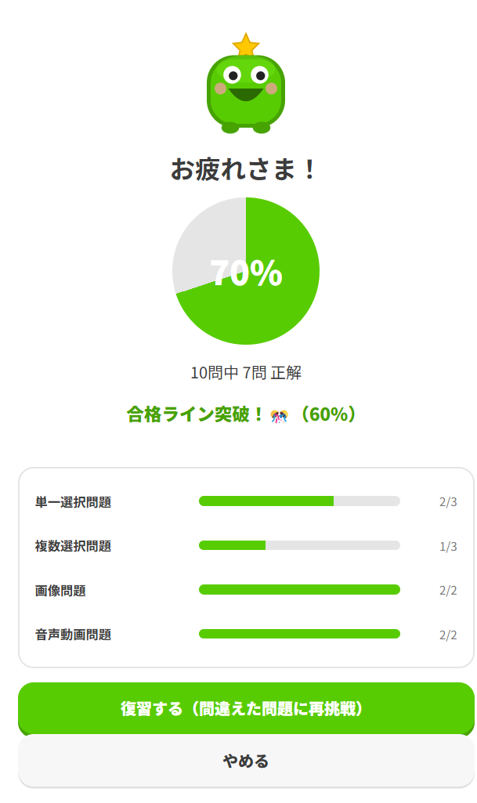
「復習する（間違えた問題に再挑戦）」を押すと、間違えた問題だけがもう一度出ます。右上に「復習1回目 1 / 3」のようにラウンド数が出ます。
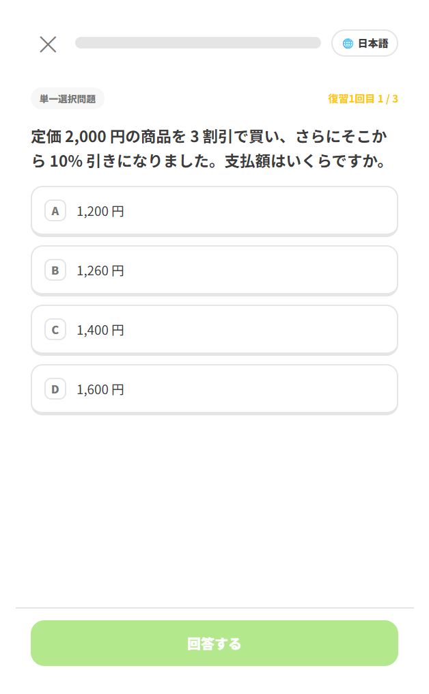
ここでまた間違えた問題は、さらに次のラウンドに回ります。全問正解するまで終わりません。全部正解すると「復習コンプリート！🎉」になります。
通算正答率が下がることを気にせず、何周でも叩けます。答えを覚えてしまうことを心配する必要もありません。次に本番比率で出題されたとき、本当に解けるかどうかで確かめられます。
間違え見直しで読み返す
復習が終わったあと（または本番モードの結果画面から）「間違えた問題を復習」を押すと、そのセッションで間違えた問題が一覧で開きます。
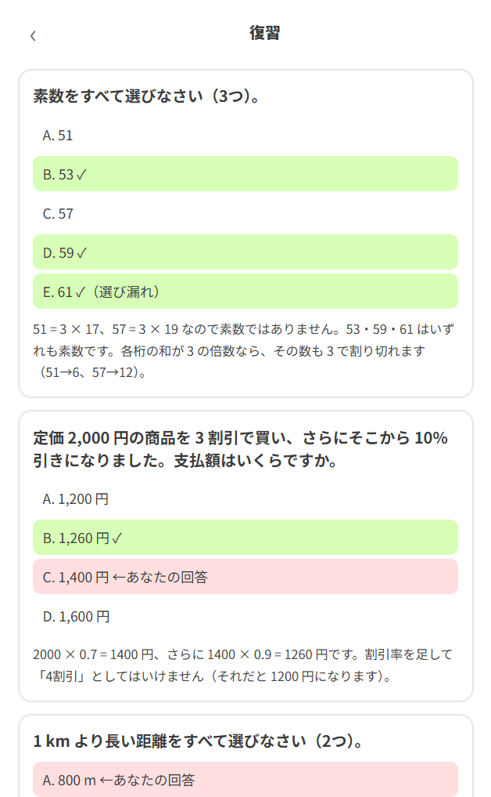
問題文・全選択肢・解説が縦に並ぶので、どう間違えたのかをまとめて確認できます。復習ループが「手を動かして覚え直す」のに対して、こちらは「読んで整理する」ためのものです。
読み終えたら左上の ‹ で結果画面に戻り、「ホームへ」でセッションを閉じます。これで 1 回分が完了です。
復習せずに閉じても、間違えた記録はちゃんと残ります。次に「間違え優先」で解けば、その問題が優先的に出てきます。時間がない日はそれで構いません。
7ストリーク（連続学習日数）
セッションを最後まで解き切ると、その日が「達成」になります。達成した日が途切れずに続いている日数が、ストリークです。
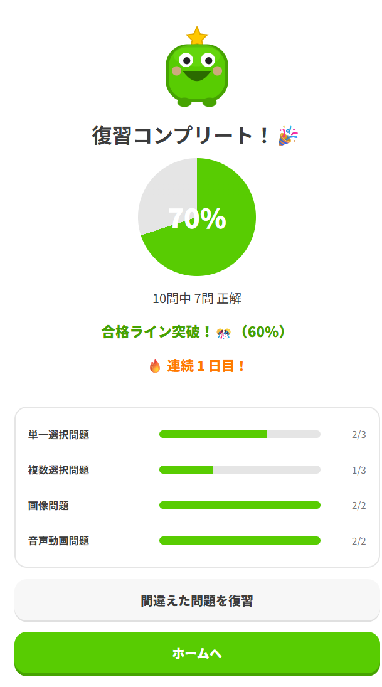
途中で中断したセッション（「記録せずにホームへ」も「途中結果を見る」も）では達成になりません。最後まで解き切ることが条件です。また復習ループを中断した場合も付きません。オフラインで解いた分も記録が届かないため付きません。
1 日に何回解いても、その日の達成は 1 回分です。数字を増やすには日をまたいで続けるしかありません。逆に言えば、忙しい日でも 1 回だけ回せば途切れません。
成績をリセットすると、学習した日の記録も消えるためストリークもゼロに戻ります。リセットの使いどころは 04 章 で扱います。
8途中でやめる
急に時間がなくなったら、画面左上の ✕ を押します。
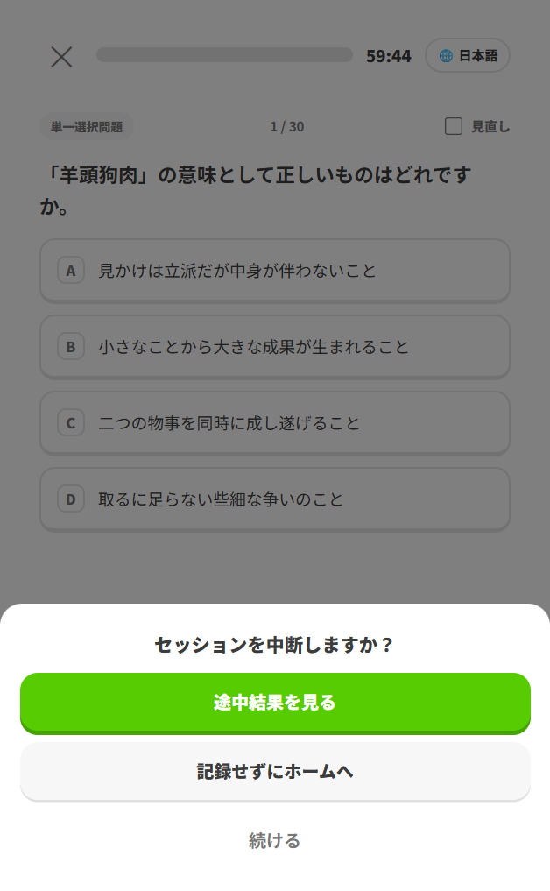
| 選択 | どうなるか |
|---|---|
| 途中結果を見る | そこまで解いた分で結果画面を出します。解いた分の記録は残りますが、ストリークは付きません |
| 記録せずにホームへ | そのセッションをなかったことにして抜けます |
| 続ける | 中断をやめて問題に戻ります |
中断したセッションを後で続けることはできません。次に始めるときは新しいセッションになります。だからこそ、通常セッションは一度で終わる長さに設定されています。時間が読めない日は本番モードを避け、通常セッションを選んでください。